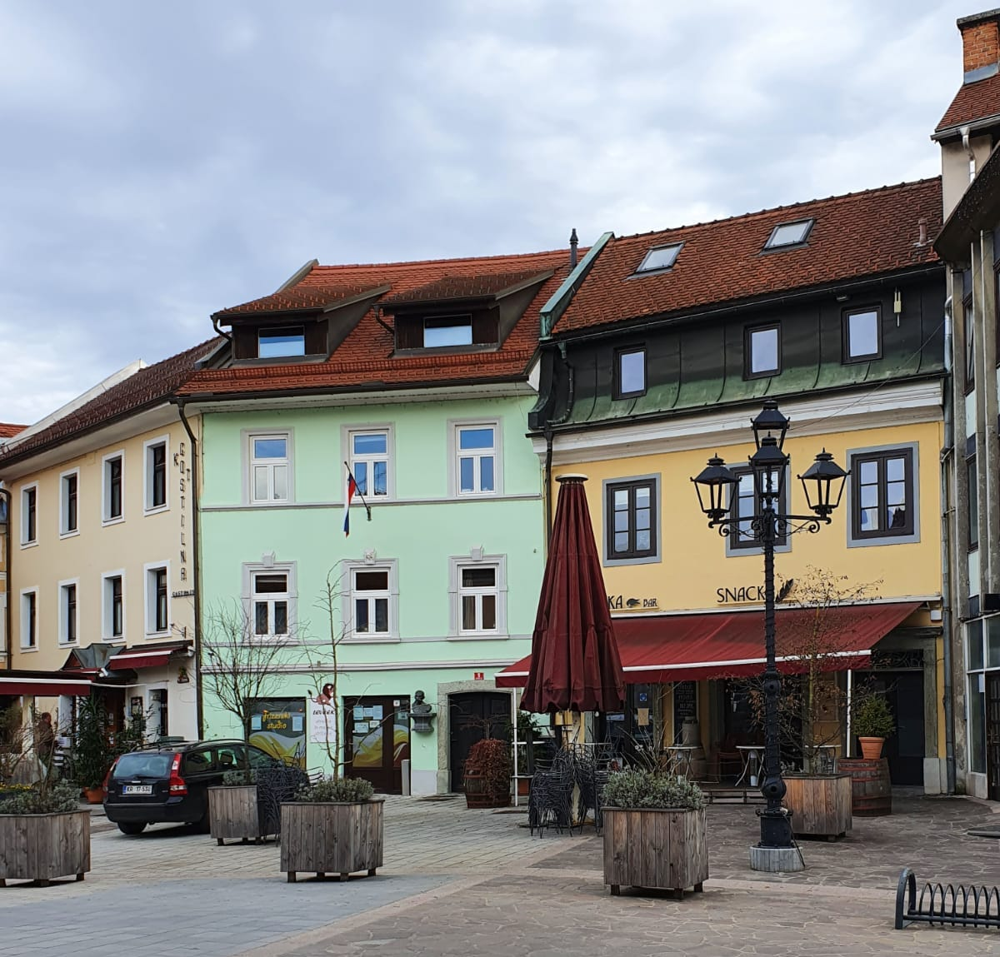
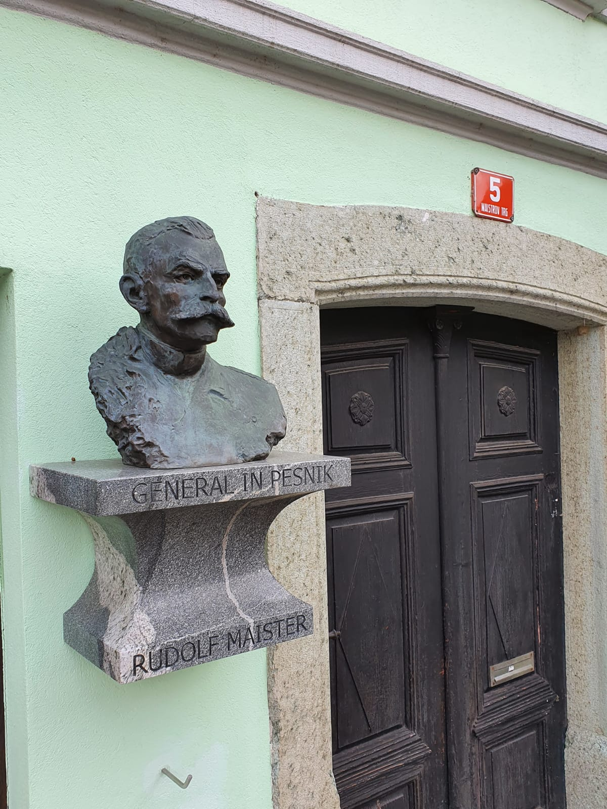
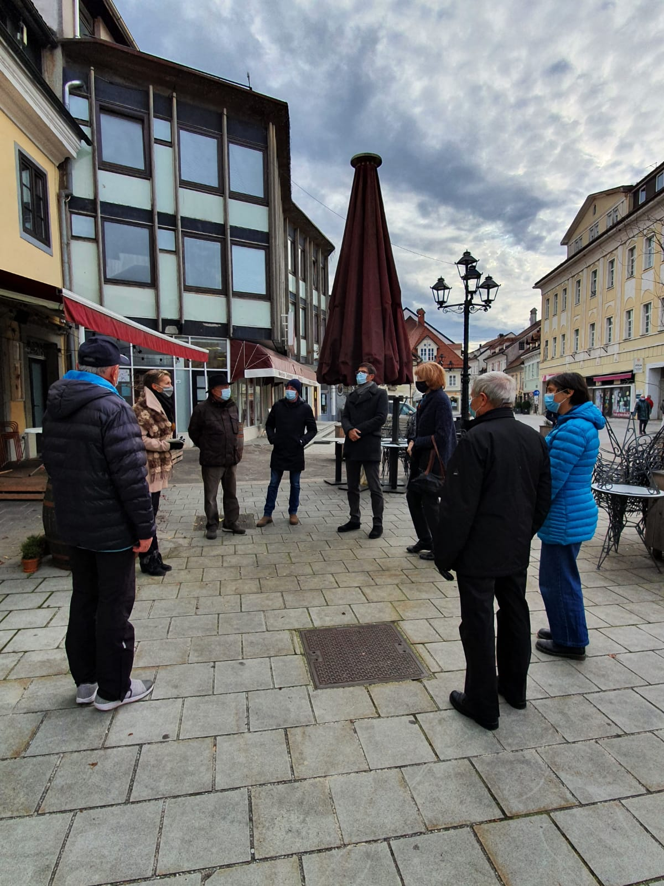
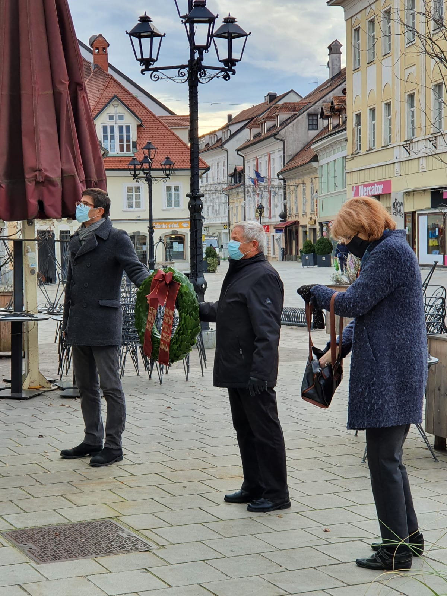
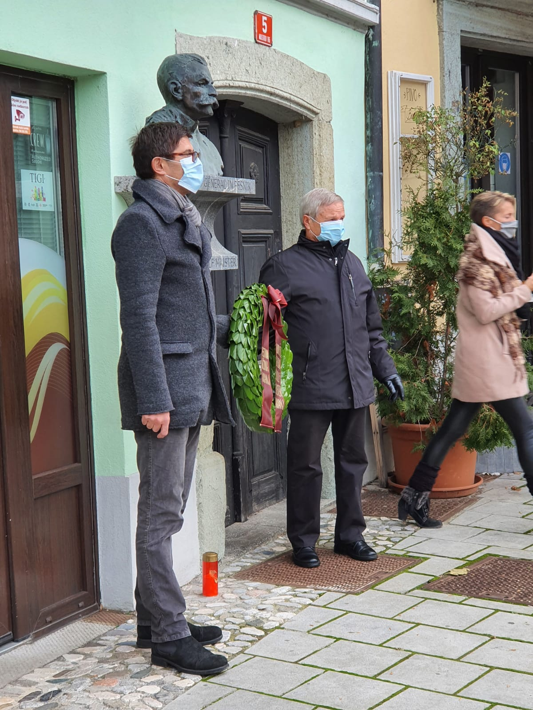
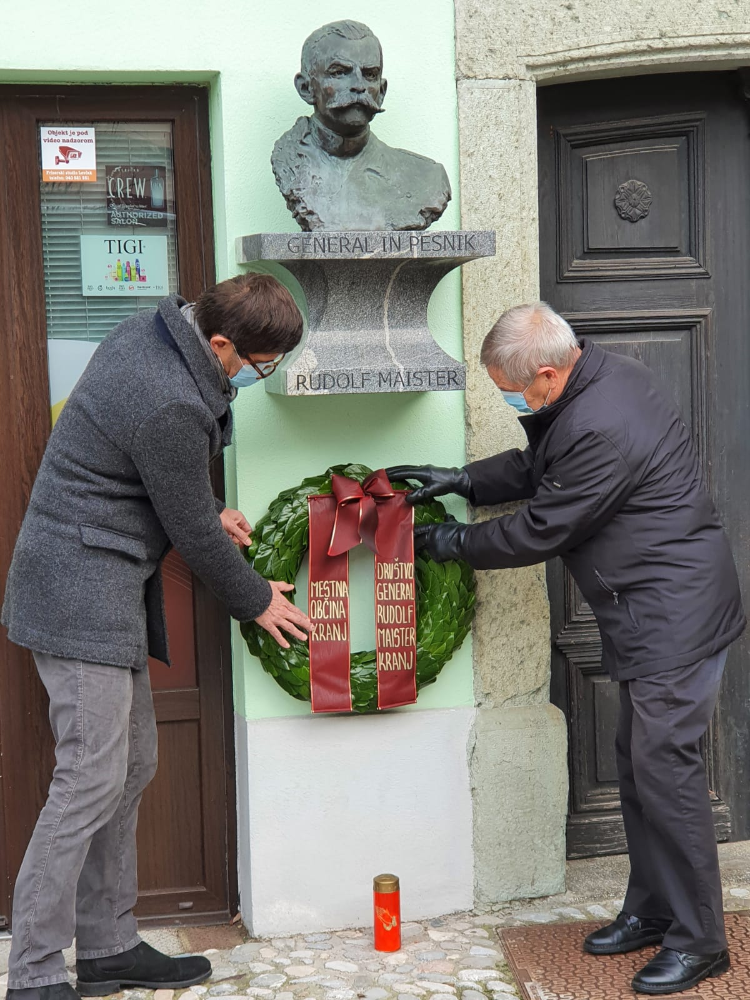
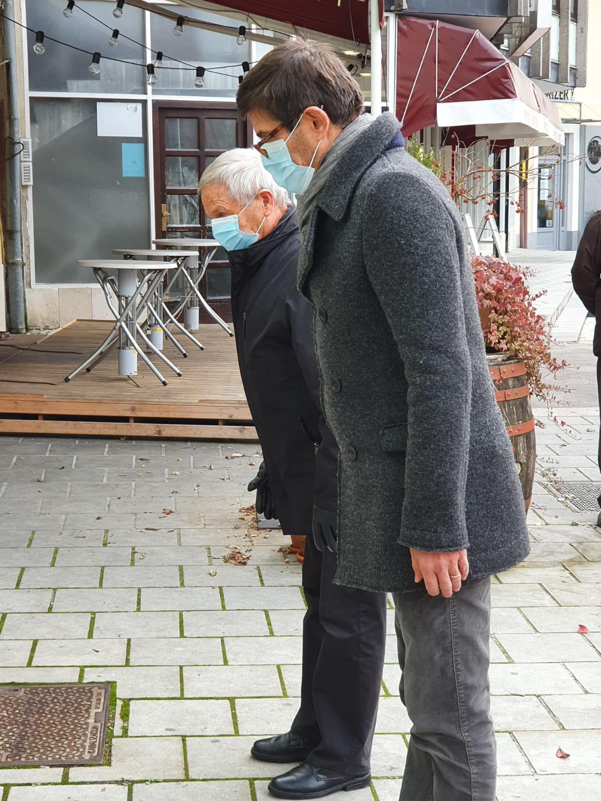
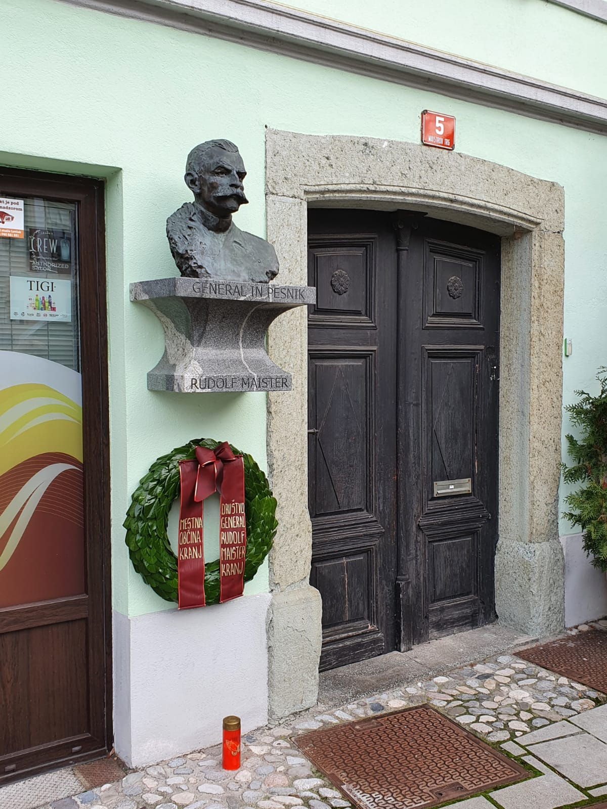

Proslava ob dnevu Rudolfa Maistra
Državni praznik, dan Rudolfa Maistra, praznujemo v Sloveniji v spomin na njegov boj za severno slovensko mejo od leta 2005.
23. novembra 1918 je Rudolf Maister razorožil nemško varnostno stražo in jo razpustil. S tem pomembnim dejanjem, v katerem je sodelovala prva slovenska redna vojska v zgodovini, je uveljavil ljudsko voljo in dosegel, da je velik del štajerskega in koroškega slovenskega etničnega ozemlja pripojil slovenski oziroma jugoslovanski upravi.
V Kranju je Rudolf Maister preživel kar nekaj otroških in mladostnih let. Tu je končal osnovno šolo, ki jo je začel obiskovati v Mengšu, in gimnazijo. Že v kranjski gimnaziji je začel kazati tudi svojo nadarjenost za pesništvo in slikarstvo. V četrtem letniku je ustanovil in urejal »Internos«, rokopisni dijaški list, globoka pesniška čustva pa je največkrat objavljal pod psevdonimom Vojanov. Izdal je tudi dve pesniški zbirki - Kitica mojih in Poezije.
Danes smo se mu na Maistrovem trgu v Kranju ob državnem prazniku poklonili tako, da sta predsednik Društva general Rudolf Maister Kranj mag. Janez Tavčar in župan MO Kranj g. Matjaž Rakovec v spremstvu nekaterih članov društva položila venec k njegovemu spomeniku.







